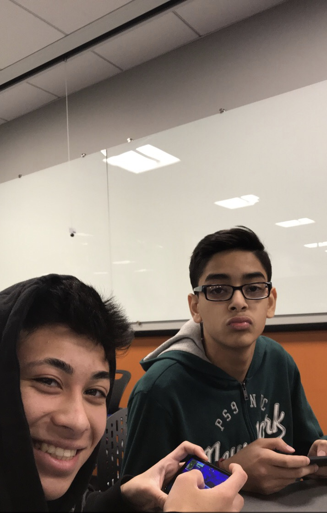
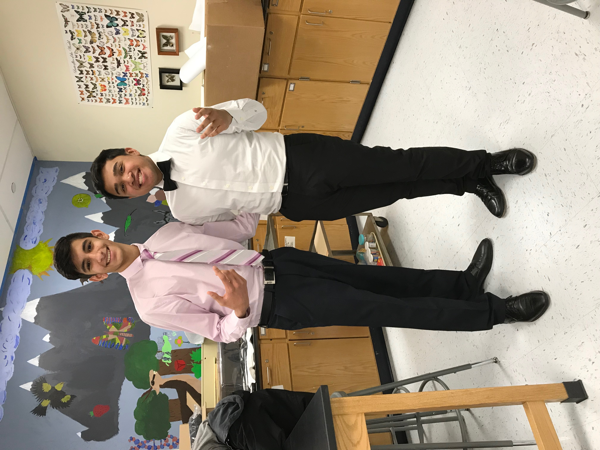
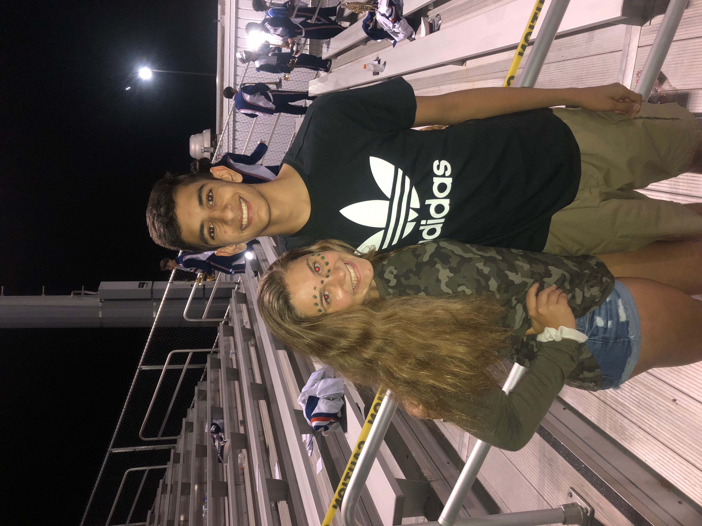
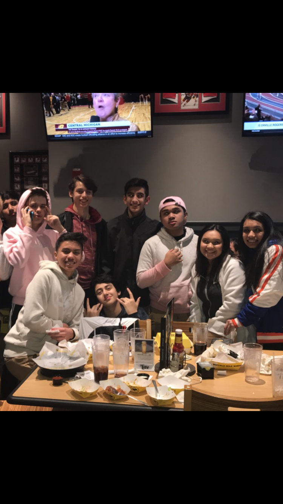
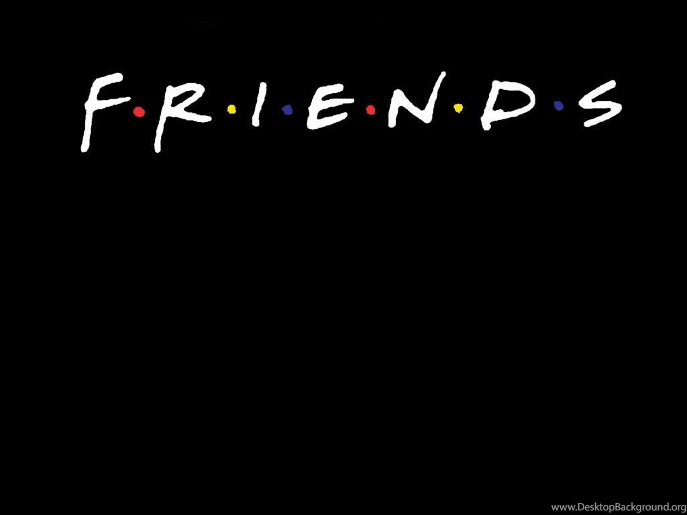

These are not all my friends but some of my closest friends. The picture furthest left are of Ken and Shabih in Ap seminar. Although that class was very stressful they always made me laugh and think positive. The picture to the right of that one is of Jonny, my best friend. This was in Biology and we were dressed up for our first volleyball game. I remember being so nervous but Jonny was such a great teammate and helped make me feel confident.The picture right of that is my volleyball team of freshman year. The team was like a family to me and season was definetly the best part of the year as I saw my friends everyday and played the sport I love. Lastly, the picture furthest right is Cassidy. Cassidy is one of my best friends. I met her this year and we are already very close. She is really nice and funny and we had a fun time at the game with our other friends too(picture was from the football game).




